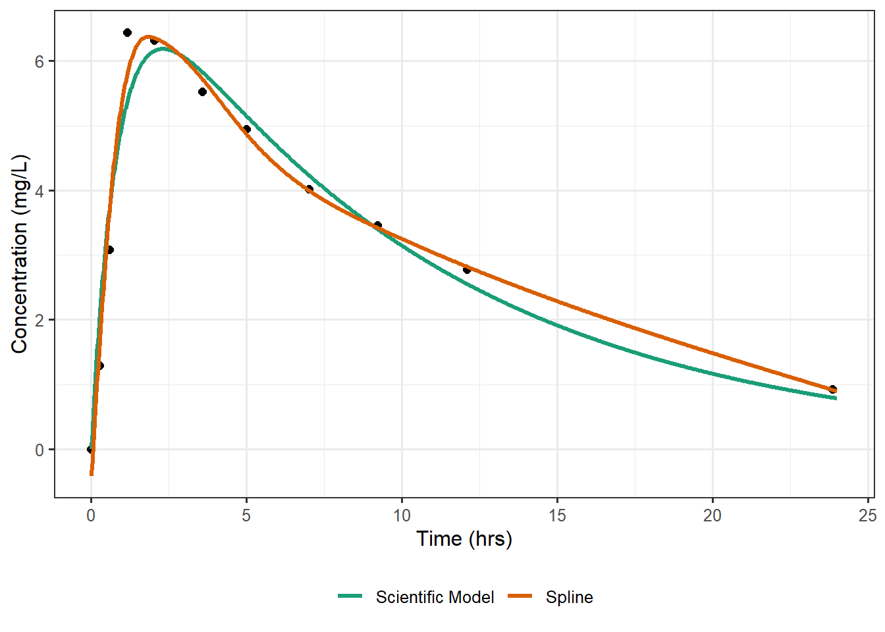
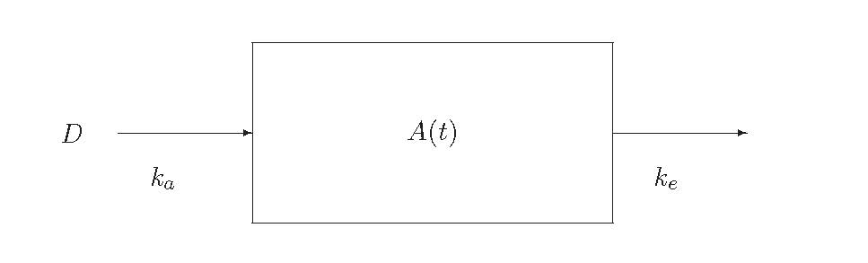

16 Nonlinear Model Framework
There are several disciplines that routinely use nonlinear models; one such discipline is pharmacokinetics (the study of how medications are processed by the body).
Example 16.1 (Pharmacokinetics of Theophylline) An early-phase clinical study was conducted to assess how Theophylline (an anti-asthmatic agent) is absorbed and eliminated from the human body. A single subject was given an oral dose of 4 mg of the drug, and 11 blood samples were taken over the course of a 24-hour period to determine the concentration of the drug in the body. A graphical summary of the resulting data is presented in Figure 16.1.
Given the topics discussed thus far in the text, it would be reasonable to consider using a flexible spline to model the curvature in the response over time. Based on Figure 16.1, qualitatively, using a spline appears to perform rather well. While this approach fits the data well and would allow us to construct good predictions, using a spline does not allow us to easily address the research objective: quantify how quickly the drug is absorbed by and eliminated from the body. That is, this initial modeling approach does not lend itself to expressing the question of interest as a statement about the parameters in the model. It also separates the data analysis from the scientific modeling that suggests the concentration of Theophylline in the body at any point \(t\) in time is given by
\[C(t) = \frac{k_a D}{\left(\beta/k_e\right)\left(k_a - k_e\right)} \left(e^{-k_e t} - e^{-k_a t}\right), \tag{16.1}\]
where \(k_a\) (the absorption rate), \(k_e\) (the elimination rate), and \(\beta\) (the clearance) are the unknown parameters characterizing the pharmacokinetics of Theophylline, and \(D\) is the known dosage given.
Big Idea
Nonlinear models are often the result of embedding a scientific model in a statistical framework.
Scientific Model for Theophylline
We illustrate how the scientific model for the pharmicokinetics of Theophylline suggests a nonlinear model. Readers not familiar with differential equations can skip this without loss of continuity.
Researchers believe that the absorption and elimination of Theophylline can be modeled using a one-compartment open model with first order absorption, represented by Figure 16.2. The box represents the “blood compartment” (blood stream). The drug is absorbed into the blood stream through the gut; it is then metabolized by the liver and excreted by the kidneys.

Mathematical modeling allows us to characterize the concentration of Theophylline in the blood over time as a function of the elimination rate, the absorption rate, and the clearance rate (measures volume of blood cleared of the drug per unit time). Let \(D\) represent the oral dose given at time \(t = 0\); as the subject has not been given the treatment prior, it is reasonable to assume that the amount of drug in the blood is initially 0 mg; that is, \(A(0) = 0\). Further, researchers believe the body can absorb the entire dose \(D\); therefore, the amount of drug at the absorption site \(A_a(t)\) is initially 4 mg; that is, \(A_a(0) = D = 4\). Letting \(k_a\) and \(k_e\) represent the absorption and elimination rates, respectively, we have the following mathematical model corresponding to the above scientific model:
\[ \begin{aligned} \frac{d}{dt} A(t) &= k_a A_a(t) - k_e A(t) \\ \frac{d}{dt} A_a(t) &= -k_a A_a(t). \end{aligned} \]
Scientists believe that the amount of drug in the blood stream at any time is proportional to the concentration of the drug at that time \(C(t)\). That is, \(A(t) = V C(t)\), where \(V\) represents the volume of the blood compartment. The above system of differential equations can be solved using Laplace transforms. Letting \(V = \beta/k_e\) where \(\beta\) is the clearance rate, we are led to the following solution:
\[C(t) = \frac{k_a D}{\left(\beta/k_e\right)\left(k_a - k_e\right)} \left(e^{-k_e t} - e^{-k_a t}\right).\]
What we want to emphasize is that the form of the model for the concentration of Theophylline in the body was not developed empirically using statistical modeling techniques; instead, it was derived through mathematical modeling of the drug itself from scientific principles. The parameters of the model \(k_a\), \(k_e\), and \(\beta\) are unknown, but they govern the process. More, these parameters are directly related to the scientific question of interest. We can now embed this scientific model into a statistical framework (accounting for sources of variability) in order to make inference on the parameters.
Notice that there is no way of rewriting the model in Equation 16.1 as a linear combination of the parameters \(k_a\), \(k_e\), and \(\beta\); that is, there is no vector \(\mathbf{x}\) such that
\[C(t) = \mathbf{x}^\top \begin{pmatrix} k_a \\ k_e \\ \beta \end{pmatrix}.\]
Therefore, our model for the concentration of Theophylline is a nonlinear model.
Definition 16.1 (Nonlinear Model) A model is said to be nonlinear if it cannot be written as a linear combination of the parameters.
Note
When your model has more parameters than predictors, you likely have a model that is nonlinear in the parameters.
16.1 Nonlinear Regression Model
Generalizing our approach with the general linear model, we consider a semiparametric modeling perspective for most nonlinear models. Under this approach, we specify the model for the mean response and the variability of the response (given the predictors). We then use the method of least squares to obtain our estimates of the parameters, and we rely on large sample theory to characterize the sampling distribution of these parameter estimates. This framework turns out to be quite flexible.
Our semiparametric approach, also known as a “moment model,” focuses on specifying the mean and variance of the response given the predictors.
Definition 16.2 (Semiparametric Nonlinear Model) A semiparametric nonlinear model specifies the mean and variance of the response given the predictors; we write
\[ \begin{aligned} E\left[(\text{Response})_i \mid (\text{Predictors})_i\right] &= f\left((\text{Predictors})_i, \boldsymbol{\beta}\right) \\ Var\left[(\text{Response})_i \mid (\text{Predictors})_i\right] &= \sigma^2 \end{aligned} \]
where \(f(\cdot)\) is referred to as the mean response function.
For Example 16.1, our nonlinear model would have the form
\[ \begin{aligned} E\left[(\text{Concentration})_i \mid (\text{Time})_i\right] &= \frac{4 k_a}{\left(\beta/k_e\right)\left(k_a - k_e\right)} \left(e^{-k_e (\text{Time})_i} - e^{-k_a (\text{Time})_i}\right) \\ Var\left[(\text{Concentration})_i \mid (\text{Time})_i\right] &= \sigma^2. \end{aligned} \tag{16.2}\]
Notice that under this specification there is no “error” term. We only concern ourselves with positing the mean and variance; not only do we not specify the distribution of the “errors,” we do not even make use of them in our conceptualization of the model.
Note
Some authors choose to write nonlinear models as
\[(\text{Response})_i = f\left((\text{Predictors})_i, \boldsymbol{\beta}\right) + \varepsilon_i,\]
and sometimes go on to assume \(\varepsilon_i \stackrel{\text{IID}}{\sim} N\left(0, \sigma^2\right)\). However, this approach is not as flexible. First, it requires the response to be quantitative. By only specifying the mean and variance of the response, our approach generalizes to accommodate categorical responses (though we focus on quantitative responses for the majority of this unit). Second, there is little to be gained by a fully parametric approach as this does not avoid the requirements for large sample theory as it does in the linear model case. That is, even if we assume the errors follow a Normal distribution, we must rely on large sample theory to model the sampling distribution of the resulting parameter estimates.
Finally, we note that in our specification above, we have assumed the variability of the response is constant for all values of the predictor. We will relax this condition in Chapter 17.
Note
In some cases, the mean response function \(f(\cdot)\) lends itself to a transformation that results in a linear model. For example, if \(f(x, \boldsymbol{\beta}) = \beta_0 e^{\beta_1 x}\), then taking the natural logarithm of both sides results in a linear model:
\[\ln\left(f(x, \boldsymbol{\beta})\right) = \ln\left(\beta_0\right) + \beta_1 x.\]
As a result, in some disciplines, it is standard practice to consider such transformation prior to modeling. There is not widespread agreement in the statistical community on such transformations.
Applying some function so that the model is linear in the parameters (or at least, some function of the parameters) allows standard software to be used. As scientists are familiar with approaches for fitting linear models, this often makes it easy to put in a context that is understood. However, such transformations may destroy other modeling conditions, such as that of constant variance (or any distributional assumptions, if applicable). Transformations can also result in the model no longer being parameterized by the scientific quantities of interest. As scientific principles often directed the development of the nonlinear model, this is the scale on which scientists have intuition (it may be more difficult to think on the logarithmic-scale, for example), meaning scientists have less intuition on the transformed scale. After transformation, the model may no longer characterize the average response. Finally, there are some models for which such a transformation is not possible. As a result, we argue for using the nonlinear regression framework and studying methods for fitting such models.
Warning
There is a difference between taking nonlinear transformations of a predictor to fit curvature in a linear model and taking nonlinear transformations of a model (the response often) in order to convert a nonlinear model into a model which is linear with respect to some function of the parameters.
16.2 Estimation
The method of least squares for nonlinear models is similar to the process for linear models. We choose the values of the parameters that ensures the predicted mean function is as “close” to the observed responses as possible. While we do not have an error term in the model, we can still consider the residuals when defining how “close” our predicted mean response is to the observed responses. The least squares estimates minimize
\[\sum\limits_{i=1}^{n} \left[(\text{Response})_i - f\left((\text{Predictors})_i, \boldsymbol{\beta}\right)\right]^2.\]
In the nonlinear model literature, this is often referred to as the ordinary least squares estimator.
Note
If we take \(f(\cdot)\) to be a linear function in the parameters,
\[f\left((\text{Predictors})_i, \boldsymbol{\beta}\right) = \sum_{j=1}^{p} (\text{Predictor } j)_i \beta_j,\]
the linear model framework is a special case of the nonlinear regression model.
The least squares estimates are computed numerically (for details, see Chapter 20).
Given parameter estimates, we can then estimate the residual variance:
\[\widehat{\sigma}^2 = \frac{1}{n-p} \sum\limits_{i=1}^{n} \left[(\text{Response})_i - f\left((\text{Predictors})_i, \widehat{\boldsymbol{\beta}}\right)\right]^2\]
where \(p\) represents the number of parameters in the model, which need not correspond to the number of predictors in the model.
As with previous models discussed in the text, the process of estimating the parameters is a mathematical problem. It is the process of making inference where we move into the realm of statistics.
16.3 Inference on the Parameters
In order to make inference about the parameters, we need a model for the sampling distribution of the parameter estimates. Unlike with the general linear model, we cannot rely on probability theory to obtain exact models for the sampling distributions. Therefore, we rely on large sample theory and empirical models (Chapter 11).
Definition 16.3 (Large Sample Model for the Sampling Distribution of the Least Squares Estimates in Nonlinear Models) Consider a nonlinear model as described in Definition 16.2. Assuming the form of the model is correctly specified, as the sample size gets large, we have that
\[\frac{\widehat{\beta}_j - \beta_j}{\sqrt{Var\left(\widehat{\beta}_j\right)}} \sim N(0, 1)\]
for all \(j = 1, \dotsc, p\). Further, under the null hypothesis
\[H_0: \mathbf{K}\boldsymbol{\beta} = \mathbf{m}\]
we have that
\[\left(\mathbf{K}\widehat{\boldsymbol{\beta}} - \mathbf{m}\right)^\top \left(\mathbf{K}\widehat{\boldsymbol{\Sigma}}\mathbf{K}^\top\right)^{-1} \left(\mathbf{K}\widehat{\boldsymbol{\beta}} - \mathbf{m}\right) \sim \chi^2_r\]
where \(r\) is the rank (number of rows) of \(\mathbf{K}\) and \(\widehat{\boldsymbol{\Sigma}}\) is the estimated variance-covariance matrix of the parameter estimates.
Note
Large sample theory is often relied on regardless of the sample size. It is often the case that there is so little error in the responses that the sampling distributions of the estimates comes close to these asymptotic approximations even in small samples.
Making additional distributional assumptions does not avoid the need for large sample theory.
The above results allow us to not only construct confidence intervals, but we can also make use of the general linear hypothesis testing framework (Chapter 10) for testing specific hypotheses. That is, our inference is not all that different than under the general linear model framework once we have estimates for the parameters and estimates for their standard errors.
16.4 Allowing Relationships to Vary Across Groups
Modeling involves positing a relationship between the response and the predictors. Suppose we believe the form of the model is similar for all subjects in a population, but the specific parameters may differ across sub-populations. By including interaction terms, we can allow the relationship to vary across sub-populations.
Big Idea
Interaction terms allow a parameter to depend on the value of another variable.
The idea of allowing a relationship to depend upon a predictor is something we have studied in each of the previous units. The same ideas apply in nonlinear models; the difference is that computationally, it requires more to specify the model appropriately in the computer.
General Approach for Including Interactions
In order to allow parameters in a model vary across sub-populations, consider the following:
- Refine your question in terms of which parameter(s) will be allowed to vary, and which parameter(s) will remain fixed for all groups.
- Use an indicator variable to capture the grouping structure.
- Embed your research question into the general linear hypothesis framework.
Additionally, when fitting the model using software, starting estimates are typically needed (see Chapter 20); these can be obtained by fitting separate models to subsets of the data; that is, you can fit the model in each subpopulation and use the resulting estimates as starting estimates for the actual model of interest.
These considerations are quite general and can be widely applied.
Example 16.2 (Bacteria Growth) Suppose we believe a particular bacteria grows exponentially. That is, we believe that, on average, the response is given by
\[E\left[(\text{Response})_i \mid (\text{Time})_i\right] = \alpha_0 + e^{\alpha_1 (\text{Time})_i}\]
at each observed time.
Researchers are considering two different media for culturing the bacteria. Before proceeding to production, they would like to determine if there is evidence that the growth trajectory of the bacteria differs between the two media.
While wells containing the bacteria are seeded at the same amount regardless of the media (same amount of bacteria to begin with), we believe the media might result in different growth rates. As a result, we expect the value of \(\alpha_0\) to be the same for both media, but the value of \(\alpha_1\) could differ for the each of the two media.
To develop a model consistent with the researchers’ beliefs in Example 16.2, we consider an interaction term. Specifically, define an indicator variable
\[(\text{Media B})_i = \begin{cases} 1 & \text{if i-th observation corresponds to bacteria grown in media B} \\ 0 & \text{if i-th observation corresponds to bacteria grown in media A.} \end{cases}\]
Now, consider the following nonlinear model:
\[ \begin{aligned} E\left[(\text{Response})_i \mid (\text{Time})_i, (\text{Media})_i\right] &= \beta_0 e^{\left(\beta_1 + \beta_{2} (\text{Media B})_i\right) (\text{Time})_i} = \beta_0 e^{\beta_1 (\text{Time})_i + \beta_{2} (\text{Media B})_i (\text{Time})_i} \\ Var\left[(\text{Resposne})_i \mid (\text{Time})_i, (\text{Media})_i\right] &= \sigma^2. \end{aligned} \]
This model has an interaction between the indicator variable for Media B and the time; however, there is no “main effect” of the media; that is, there is no term that has \(\beta_3 (\text{Media B})_i\). This single model implies expected responses for each media:
\[ \begin{aligned} \text{Media A}&: E\left[(\text{Response})_i \mid (\text{Time})_i\right] = \beta_0 + e^{\beta_1 (\text{Time})_i} \\ \text{Media B}&: E\left[(\text{Response})_i \mid (\text{Time})_i\right] = \beta_0 + e^{\left(\beta_1 + \beta_2\right)(\text{Time})_i}. \end{aligned} \]
Notice this model maintains the assumptions we had about the process:
- The initial state is the same under both media \(\left(\beta_0\right)\).
- The growth rate is allowed to differ under the two media \(\left(\beta_1 \text{ vs. } \beta_1 + \beta_2\right)\).
As discussed when we introduced interaction terms in linear models, the benefits of using interaction terms instead of doing a subgroup analysis is that we can easily control which parameters are allowed to differ, we make use of the constant variance condition gaining power, and our question of interest is embedded in the model. To illustrate this last point, notice that the hypotheses
\[H_0: \gamma_2 = 0 \qquad \text{vs.} \qquad H_1: \gamma_2 \neq 0\]
test whether the growth rate actually differs between the two media.